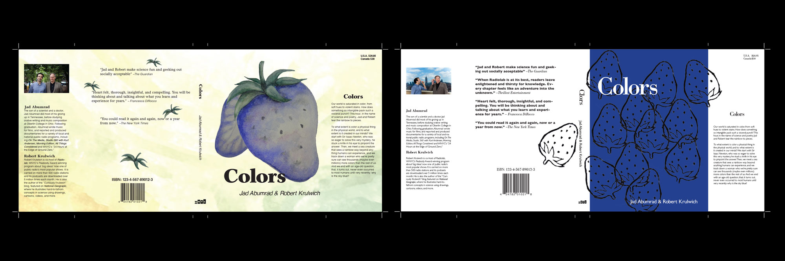

Radiolab Book Cover Designs
Custom Illustrations for a Unique Author
Radiolab is a New York-based famous radio program discus about several kinds of interesting topics hosted by Jad Abumrad and Robert Krulwich. The objective of this project was to create book jackets for three podscast as a trilogy.
{kind=link}
Sketches
In this project, I drew more than 100 sketches for each topic and created three designs based on these sketches. I chose Colors, Time, and Choice for this project. Once the design direction was selected, I had created the remaining two designs, which were cohesive and polished.
3 Designs
{kind=link}
Colors
As for colors, I thought that we are not able to know the actual colors of things, and we can see the colors only within the human color range. In that case, we do not know that strawberry’s color is red or not. I thought about which color is the best color to suppress appetite and the most unexpecting color and, I decided to use blue for the color. Also, I wanted to use different materials for each design, and I used felt sheets made of recycled plastic bottles, watercolor paintings, and gouache.
Time
The second topic was time, and I tried to represent the passage of time using the melted ice cream. At the first book design, I used was strawberries, and I wanted to create a pop design similar to the first design. It was hard to choose the background and text color to match the ice cream’s color, and I spent a lot of time selecting the functional color as a part of the trilogy.
{kind=link}
{kind=link}
Choice
The third topic was the choice. We continue to make the decision in everyday life and choose the one from several selections. I represented many choices using a bunch of keys and the answer of choice using a keyhole.
Proposed Designs

My Challenge
In this project, I selected three unrelated podcast themes from the radio lab, and I designed book covers as a trilogy. The hardest thing for me was understanding the concepts of each podcast. After I presented my three designs for colors, the adapted design was unexpected for me. I learned that having several different design ideas and flexibility is beneficial to become a good designer.